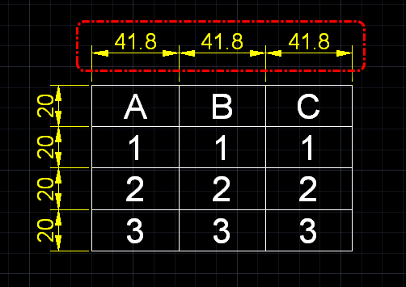
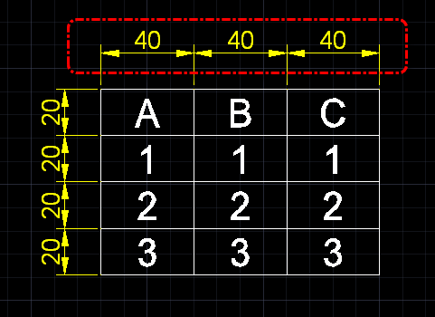

任務：圖面中是由線及文字組成的表格，請把表格「欄寬」41.8 調整為 40，表格欄高需維持 20 不變。
原始圖面

完成圖面

※其實還有很多快速方式可以達成，希望大家可以先分享自己的作法，再來看以下的「方式一」快速解決方式！
練習完成後請說明「步驟」、「貼圖」，回答的會員朋友可以得到（威望值+6）。
方式一：
範例中使用較為進階的方式，透過「圖塊」BLOCK +「比例縮放」SCALE 組合步驟，最後透過「性質」PROPERTIES 調整及「分解」EXPLODE 後達成需求！
以下操作供大家參考，有其他方式也請會員朋友們一同提出分享喔！
▼影片展示： https://youtu.be/E-5PXw_WccU
範例DWG檔案下載(2000圖面格式)：